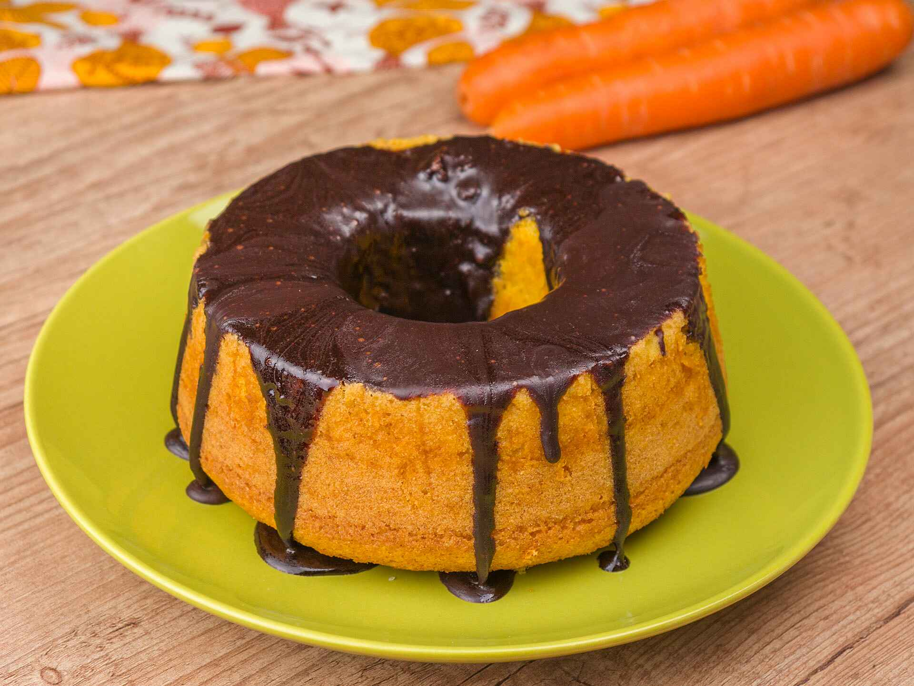
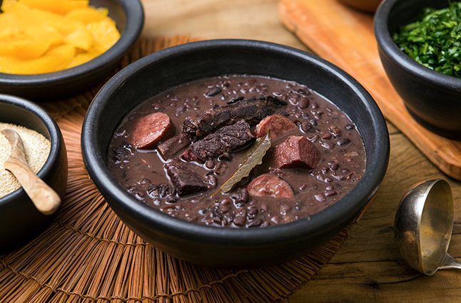

Receita de bolo de cenoura de liquidificador

Para fazer seu bolo de cenoura de liquidificador de uma vez só é preciso um liquidificador potente,
mas se achar a massa pesada para o seu aparelho, corte a cenoura em pedaços bem pequenos e só bata
no aparelho os ingredientes úmidos. Depois que estiver tudo homogêneo, incorpore a mistura líquida
aos ingredientes secos, mexendo bem e delicadamente. Além de poupar o seu liquidificador, misturar os
ingredientes secos delicadamente com a mão também é o segredo para o seu bolo de cenoura não solar.
A receita de bolo de cenoura pode ser complicada porque exige alguns pequenos detalhes que garantem
o resultado perfeito. Uma delas é a proporção de cenoura, que precisa ser correta para a receita que
você está fazendo. Por isso, para ter certeza de que não irá fazer um bolo solado, você pode utilizar a
mesma medida da nossa receita de ovo bolo de cenoura, cerca de 250 g de cenoura para 2 copos de
farinha
de trigo.
Para garantir o seu bolo de cenoura fofinho, lembre-se de testar o fermento antes de adicioná-lo à massa
e peneire a farinha de trigo! Isso vai garantir que um bolo de cenoura fofo, leve e ainda mais
delicioso!
Se você prefere um bolo de cenoura cremoso, faça uma calda para umedecer seu bolo! Basta adicionar 1
xícara
de açúcar e 1 xícara de água em uma leiteira e, assim que levantar fervura, desligue o fogo. Quando
esfriar
completamente, você pode regar seu bolo. Se quiser incrementar essa mistura para deixar ainda mais
gostoso e
dar um perfume ao seu bolo de cenoura, você pode adicionar raspas de laranja, essência de baunilha ou um
pouco
de canela. Dessa forma, você vai ter um bolo de cenoura molhadinho e delicioso!
Receita de macarrão
Em uma panela, coloque aproximadamente 2 litros e meio de água para cozinhar o macarrão acrescente sal a
gosto. Deixe ferver.
Adicione meio pacote do macarrão de sua preferência e cozinhe até ficar al dente. Escorra e reserve.
Em seguida, adicione 4 colheres de sopa de óleo e meia cebola em cubos em uma panela. Refogue.
Acrescente meia xícara do molho de sua preferência e deixe ferver.
Depois, transfira o macarrão para a panela e misture. Sirva em seguida.
Receita de Feijoada

Na véspera, lave bem a costela, a carne-seca, a orelha, o pé, o rabo de porco e o lombo, e deixe de
molho por 24 horas na geladeira, trocando a água no mínimo 4 vezes.
Escolha o feijão e deixe de molho por 2 horas. Em uma panela de pressão, coloque o feijão, cubra com a
água e cozinhe, em fogo médio, por 25 minutos, após abrir fervura.
Enquanto isso, escalde as carnes: em uma panela grande, coloque 5 litros de água e leve ao fogo alto
para ferver. Junte as carnes e cozinhe por 15 minutos.
Despreze a água, corte a carne-seca em pedaços menores e transfira todas as carnes para uma panela de
pressão. Cubra com 2 litros de água e cozinhe em fogo alto, após abrir fervura, por cerca de 20 minutos,
ou até que as carnes estejam macias.
Em uma panela média, refogue o bacon e o paio em fogo alto por 5 minutos, ou até que dourem. Adicione a
cebola e o alho, e refogue por mais 5 minutos. Acrescente 1 concha dos grãos de feijão cozidos e amasse
delicadamente. Polvilhe com o MAGGI Tempero & Sabor Feijão e misture bem.
Volte para a panela de pressão, junte as carnes com metade do caldo de cozimento e o cheiro-verde, e
cozinhe em fogo médio por 10 minutos, ou até encorpar.
Sirva acompanhado de arroz branco, couve e farofa.